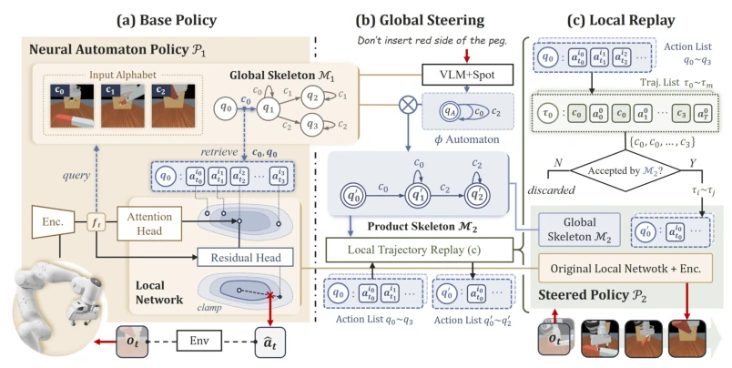
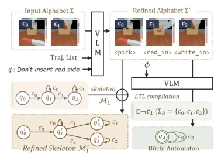
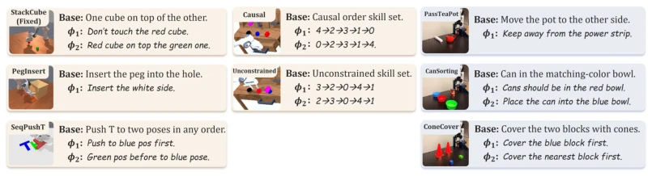
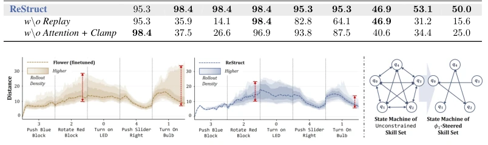
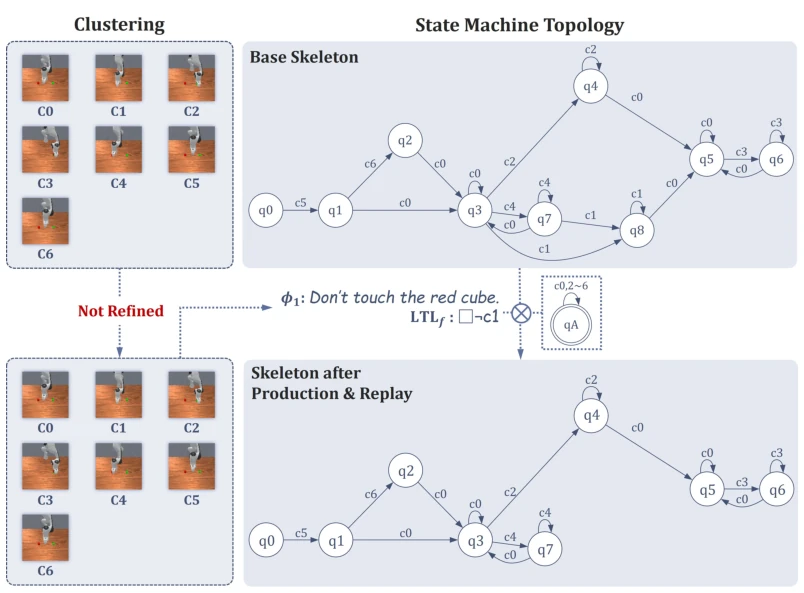
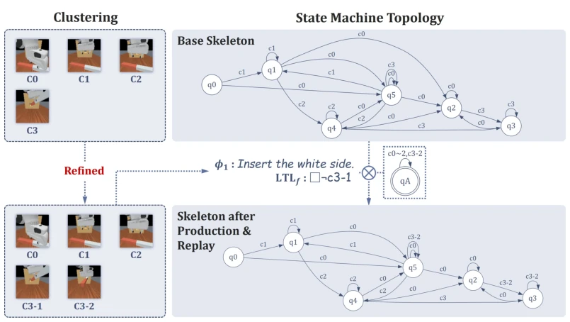
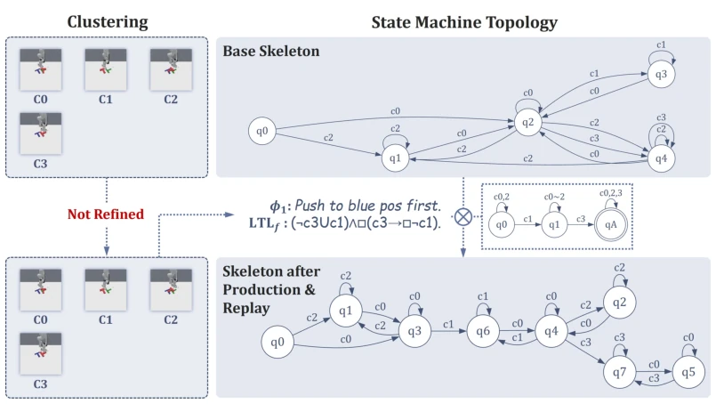
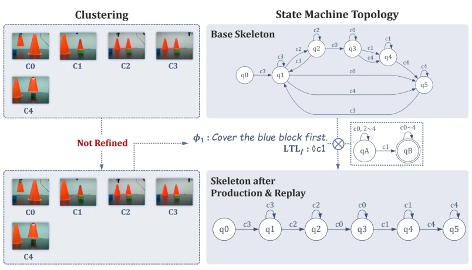
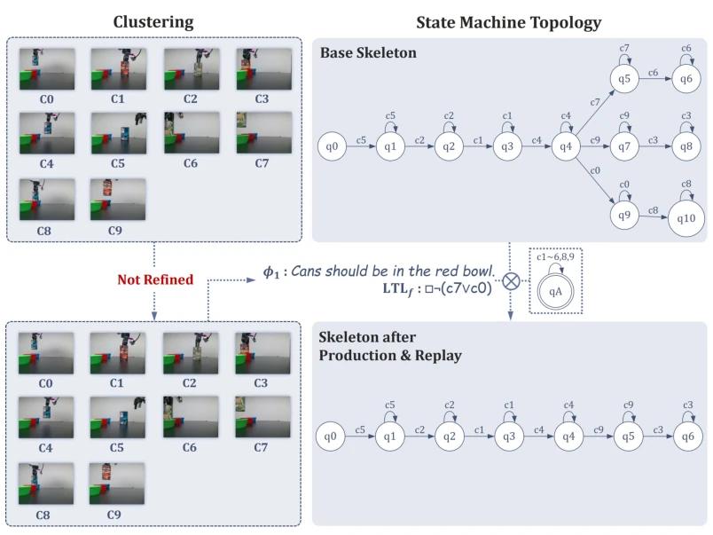
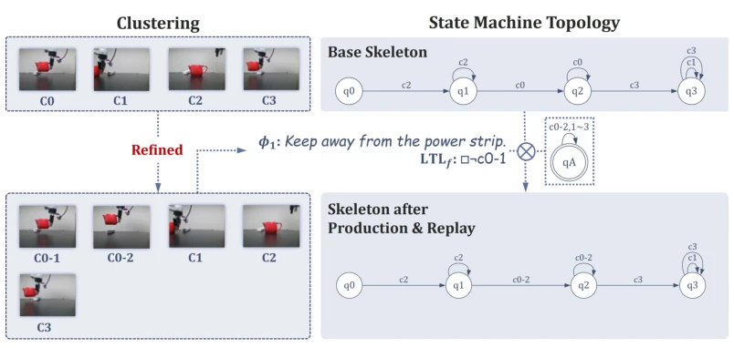

This ReStruct paper indeed has something special in inference-time behavior control, attempting to solve the pain point of understanding human language but the hands cannot keep up. The core highlight lies in that it does not blindly modify neural network weights, but guides behavior by restructuring the task structure (state machine), while ensuring physical feasibility. This is more reliable than relying solely on VLA model prompt injection, after all the latter tends to be logically smooth but physically implausible. However, this method also has hard flaws: heavily relies on VLM generating LTL formulas, if VLM translates wrong, the robot remains confused; and distillation based on ENAP itself incurs performance loss, belonging to optimization that changes the form but not the essence. Overall, it is a decent intermediate layer solution, but not yet to the extent of a silver bullet, especially in complex physical interactions still needs verification.
When deploying learned robot policies, the biggest pitfall is Inference-Time Behavior Steering. New preferences users want (such as placing cups high) are often not in the training data. Existing methods are divided into two camps: end-to-end methods (such as VLA [5,6], Diffusion [7]) either require fine-tuning or rely on expert knowledge injection, with poor generalization; neuro-symbolic methods [8,9] although can handle semantics, symbol editing often leads to logically reasonable but physically infeasible (such as grasping through walls). This paper points out that robust inference control requires intermediate representations to possess physical awareness capabilities, i.e., preferences must map to a subset executable by the controller. ReStruct aims to fill this gap, adapting to preferences without retraining, solving the lack of physical feasibility in existing methods.
ReStruct is based on the ENAP architecture, decomposing the policy into a high-level state machine (PMM), low-level controller, and action prior bridge. The process is divided into three steps: first, utilize VLM to convert natural language preferences into LTLf formulas and compile into DFA, while possibly refining state clustering; second, perform synchronous product operation between DFA and the base policy's PMM, reconstruct task structure, generate a new state machine that only accepts preference trajectories; finally, and the key step, through Trajectory Replay recalculate action priors for new state machine edges, filter out physically infeasible behaviors, while the low-level controller remains frozen. This design ensures high-level symbolic modifications can be safely conducted to low-level control, achieving physical-aware behavior guidance, avoiding the disconnection between symbolic and execution layers.
Experiments cover ManiSkill simulation, Calvin long-horizon tasks, and real-world operations (such as pouring tea, sorting). Metrics include Task Success Rate (SR) and Success Rate under Preference (SRP). Results show ReStruct surpasses OpenVLA [6], π0.5 [5], and Diffusion Policy [7] on both SR and SRP, with improvements up to 25% in some tasks. Ablation experiments show that trajectory replay and attention mechanisms are crucial for preference following. Additionally, ReStruct can recover ordered sequences from unordered data, and the deviation tube is narrower. Limitations lie in relying on VLM to generate formulas and performance loss brought by ENAP distillation, future needs to expand to richer OOD scenarios.
其他图片Other Figures

Figure 3: Overview of ReStruct on PegInsert task. (Left) Base policy P1; (Middle) ReStruct transforms preference into a DFA; its synchronous product with M1 yields the steered skeleton M2. (Right) Trajectories are repopulated, producing P2, which inherits P1’s frozen low-level. Blue / Black / Red lines are high-level skeleton / low-level controller / user-side flows.

Figure 4: VLM-based Preference Ground- ing. The VLM refines the alphabet and skele- ton M1, then generates preference DFA.

Figure 5: Task Suite. Causal skill 0∼4: rotate block, close drawer, open drawer, push right, push left; Unconstrained skill 0∼4: turn on led, turn on bulb, rotate block, push left, move slider. Challenges: PassTeaPot demands a trajectory-level preference, CanSorting’s ϕ requires compositional generalization, e.g., a new combination of red can with the blue bowl. ConeCover tests spatial reasoning with task memory, since a placed cone shouldn’t be re-picked. Causal and Unconstrained require combine atomic skills to form long-horizon execution.

Figure 7: Steering a Sequence from a Skill Graph of Unconstrained-ϕ1. (Left) ReStruct has narrower deviation tubes. (Right) ϕ1 steers the fully-connected PMM graph into a sequential chain.

Figure 8: Diagram of Skeleton Variations for StackCube (Fixed). The base skeleton and the DFA of preference ϕ1 are synthesized into a steered state machine, with an unrefined cluster table.

Figure 9: Diagram of Skeleton Variations for PegInsert. The base skeleton and the DFA of preference ϕ1 are synthesized into a steered state machine, with a refined cluster table.

Figure 10: Diagram of Skeleton Variations for SeqPushT. The base skeleton and the DFA of preference ϕ1 are synthesized into a steered state machine, with an unrefined cluster table.

Figure 11: Diagram of Skeleton Variations for ConeCover. The base skeleton and the DFA of preference ϕ1 are synthesized into a steered state machine, with an unrefined cluster table.

Figure 12: Diagram of Skeleton Variations for CanSorting. The base skeleton and the DFA of preference ϕ1 are synthesized into a steered state machine, with an unrefined cluster table.

Figure 13: Diagram of Skeleton Variations for PassTeaPot. The base skeleton and the DFA of preference ϕ1 are synthesized into a steered state machine, with a refined cluster table.